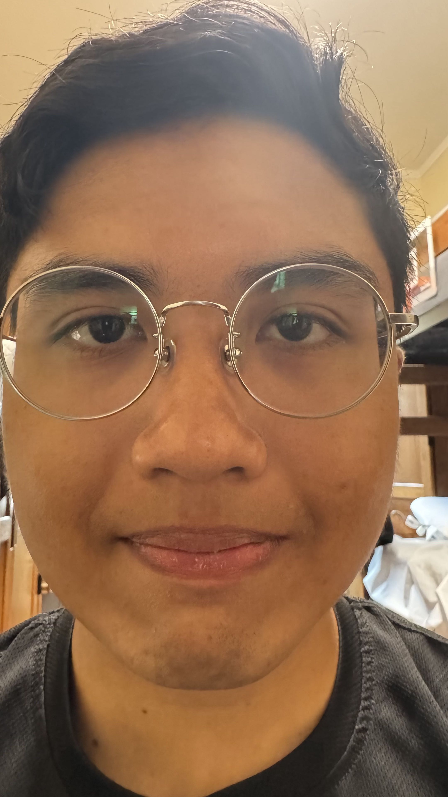
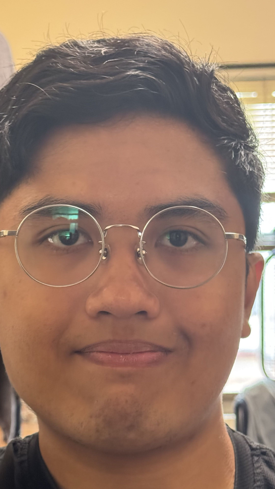
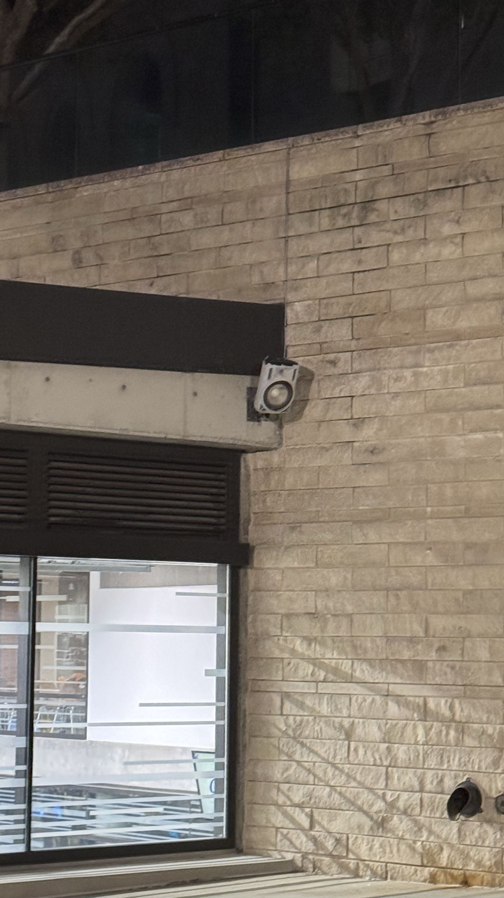
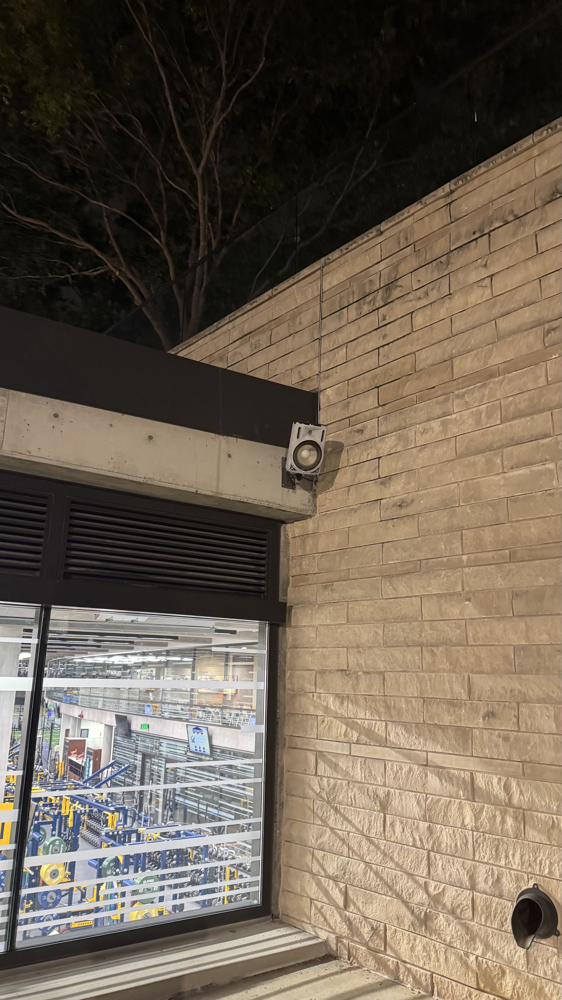
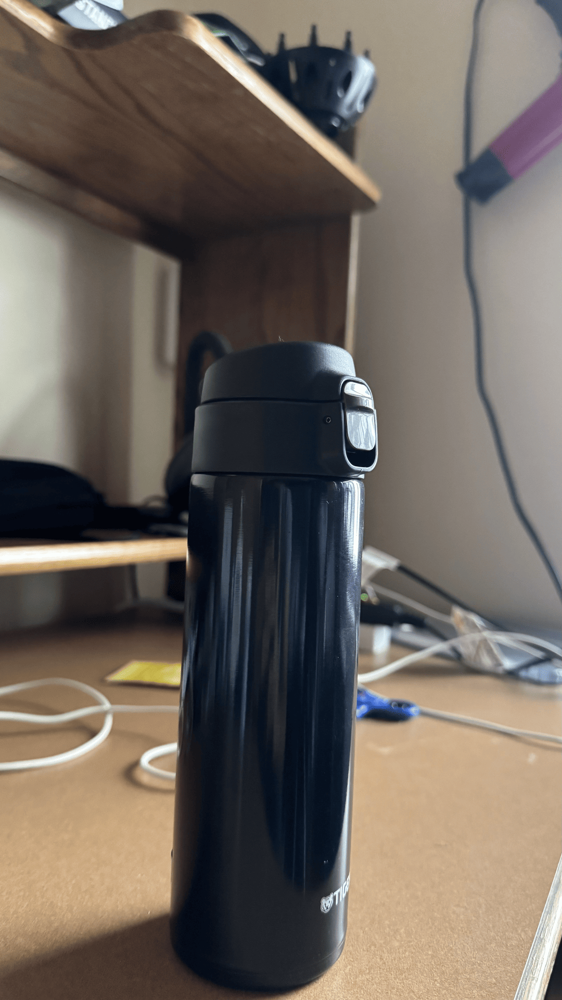

CS180: Introduction to Computer Vision and Computational Photography


In this project, I explored how camera position and focal length alter the way a subject appears. For the portrait comparison, I took one photo very close to the face and another from farther away while zooming in to keep the face about the same size in the frame.
The close-up portrait looks distorted because the nose and center of the face are much closer to the camera than the ears and sides of the head. That difference in distance creates exaggerated perspective, making the facial features appear disproportionately large. By stepping back and zooming in, the relative depth differences become much smaller compared to the overall camera-to-subject distance, so the face looks more natural and less stretched.
This shows that moving the camera changes the perspective, while zooming mainly changes the framing and field of view. The subject can remain the same size in the image without necessarily preserving the same visual distortion.


This experiment demonstrates the same idea on a larger scale: changing the camera’s position affects how depth is perceived in the whole scene. In the first photo, I stood farther away and zoomed in so the building filled a similar portion of the frame. The result appears flatter and more compressed because the depth differences across the building are smaller relative to the total camera distance.
In the second photo, I moved closer without zooming and kept the building approximately the same apparent size. The nearby parts of the facade appear much larger relative to farther parts, and the architectural lines convey a stronger sense of depth. This makes the structure feel more three-dimensional.
In other words, the perspective changes because the camera was physically moved, not simply because the focal length changed. Zoom can help match the framing, but it does not fundamentally change the spatial relationship between objects in the scene.

For the dolly zoom, I took a sequence of photographs while moving the camera backward and zooming in at the same time. I tried to keep the main subject approximately the same size in each frame so that the background would change around it.
When these frames are combined into the GIF, the subject stays relatively stable while the background appears to stretch, compress, or shift in scale. This is the classic "Vertigo" effect: moving the camera changes perspective, while the zoom compensates to keep the subject framed similarly.
The result is a visually striking illusion where the subject remains centered but the world around it feels like it is changing depth and scale. It is a powerful example of how perspective and focal length work together to shape our perception of a scene.